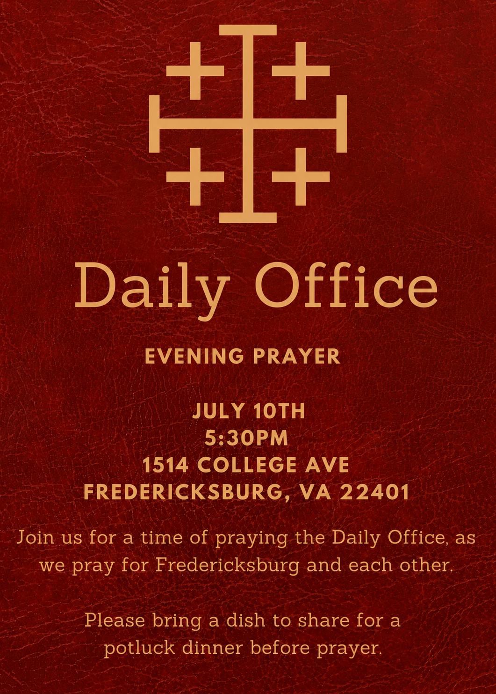

Our next gathering — everyone is welcome.
Our next gathering
What: Daily Office: Evening Prayer
Date: July 10, 2026
Time: 5:30 PM
Location: 1514 College Avenue, Fredericksburg, VA 22401
Support the mission
Giving is handled securely through the Diocese of the Mid-Atlantic. This giving link has a drop down menu underneath "Please direct my support" where you can click "Fredericksburg, VA, Church Plant Fund".
Get in touch
Have a question, or planning your first visit? We would love to hear from you. Email us at contact@fredericksburganglican.org.